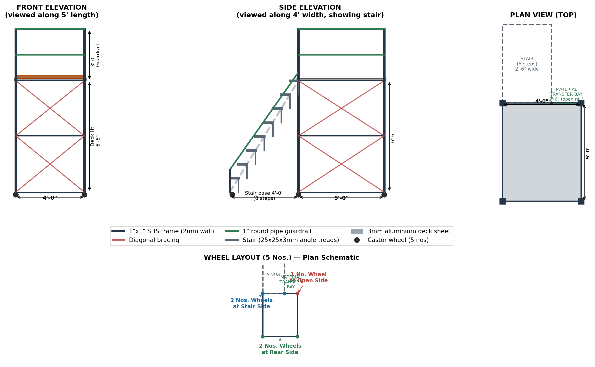

Mobile Tower Working Platform — Specification & Drawing
5'-0" × 4'-0" Deck, 6'-6" Height, Integrated Stair, SWL 250 kg
| Designed By |
Zorez Khan — ZK Ventures |
| Scope |
Civil, Mechanical & Housekeeping |
| Client |
Modern Steel Service |
| Project |
TSUISL Golmuri GF6 |
1. Design Data (As Specified)
|
|
Guardrail Height3'-0" above deck |
Stair2'-6" wide, 8 steps, 4' base |
Material Transfer Bay2'-6" |
|
Frame1"×1" SHS, optimized gauge |
|
|
DeckAluminium sheet on sq. pipes |
|
|
2. Schematic Drawing

Fig. 1 — Front Elevation, Side Elevation (with stair), Plan View, and Wheel Layout. All dimensions indicative; verify on site before fabrication.
3. Structural Design Basis & Checks
The following checks were carried out to confirm the specified sections are adequate,
and to identify where the original spec needed adjustment for safe performance at
the stated 250 kg SWL and 6'-6" height.
3.1 Deck Loading
Deck area = 5' × 4' = 1.86 m² | Design load = 250 kg = 2452 N
Equivalent UDL = 135 kgf/m² (1.32 kN/m²) — below EN 12811 Class 2 rating (1.5 kN/m²)
3.2 Deck Joists — 1"×1" SHS, 300mm c/c
Span = 4' (1219mm) between end supports, joists at 300mm c/c across 5' length
At 2mm wall: bending stress ≈ 54 MPa (allow. ~165 MPa) | deflection ≈ span/368 — OK
3.3 Legs / Posts — Buckling Check
Load per leg (4 legs, incl. self-weight) ≈ 1055 N; Euler buckling SF > 8 even fully unbraced over 6'-6"
Axial capacity of 1"×1" SHS at 2mm wall is not the governing concern — slenderness and
lateral sway are. Horizontal ties + diagonal bracing at ~1000mm vertical intervals are mandatory
to control sway and keep the frame rigid under working/lateral loads, not just to prevent buckling.
3.4 Tower Stability (Tip-Over)
Height:Base ratio = 9.5ft (overall) ÷ 4ft (short side) = 2.38:1 — within typical 3:1 mobile tower guidance (no outriggers needed)
Stability ratio (restoring/overturning moment, 300N lateral push at top) ≈ 2.96 — healthy margin
3.5 Stair Treads — 25×25×3mm MS Angle, 2 Stringers
Span = stair width = 2'-6" (762mm); design point load = 100 kg (single worker)
With pinned/simply-supported end assumption: marginal (defl. 3.2mm vs 3.0mm limit)
With realistic welded fixed-end connection at both stringers: deflection ≈ 0.8mm — OK, comfortable margin
25×25×3mm angle treads work safely across the full 2'-6" span with 2 stringers only
(no center stringer needed) — provided tread-to-stringer joints are welded, not bolted/pinned.
This matches the specified requirement and the reference configuration.
3.6 Deck Sheet — Aluminium on Square Pipes
Joist spacing 300mm c/c; design UDL 1.32 kN/m² is below EN 12811 Class 2 (1.5 kN/m²)
3mm plain aluminium sheet recommended — matches proven industry mobile-tower deck practice at this joist spacing and load class
3.7 Wheel Loading
Total design weight (structure + SWL) ≈ 430 kg over 5 wheels = 86 kg/wheel average
With 5 wheels (asymmetric: 2 stair-side + 1 open-side + 2 rear-side), load distribution is
uneven by geometry — the stair-side legs carry more dead weight. Specify each castor rated
for minimum 150 kg (not just the 86 kg average) to allow for uneven floors, dynamic/rolling
loads, and this geometric imbalance.
4. Member Sizing & Specification
| Member | Size / Section | Notes |
|---|
| Main frame — legs, ledgers | 1"×1" SHS, 2mm wall | Confirmed adequate; bracing mandatory |
| Horizontal ties / bracing | 1"×1" SHS, 2mm wall | At ~1000mm vertical intervals minimum |
| Diagonal braces | 1"×1" SHS, 2mm wall | Every braced bay, both faces |
| Deck joists | 1"×1" SHS, 2mm wall @ 300mm c/c | Span 4' (1219mm) |
| Deck sheet | 3mm plain aluminium sheet | Fixed to joists (rivet/screw); plain sheet specified, not chequered plate |
| Guardrail (top + mid rail) | 1" round pipe | Continuous on all open edges |
| Toe board | Timber/MS sheet, 150mm ht. | All open deck edges |
| Stair stringers | 1"×1" SHS or equivalent (2 nos) | Sloped, ground to deck level |
| Stair treads | 25×25×3mm MS angle (8 nos) | Welded to stringers both ends — not bolted |
| Stair handrail | 1" round pipe | Sloped, following step line |
| Material transfer bay rail | 1" round pipe | 2'-6" opening, removable/swing gate recommended |
| Castor wheels | 5 nos, rated ≥150 kg each | 2 swivel (stair side) + 1 swivel (open side) + 2 fixed/swivel (rear) — at least 2 with brakes/locks |
5. Wheel Layout
| Position | Qty | Type |
|---|
| Stair side (under stair-end legs) | 2 | Swivel castor, braked |
| Open side (material transfer bay end) | 1 | Swivel castor, braked |
| Rear side | 2 | Swivel castor (fixed/directional optional) |
All 5 castors rated minimum 150 kg capacity each. At least the stair-side pair must have
locking brakes — engage before mounting the stair or working on the platform.
6. Finish & Paint Specification
| Component | Finish | Notes |
|---|
| Main frame, legs, ledgers, bracing | Red oxide primer + Safety Yellow enamel/PU paint | Standard color for mobile/temporary works equipment on industrial sites |
| Stair stringers | Red oxide primer + Safety Yellow enamel/PU paint | Matches frame |
| Handrails (deck + stair) | Safety Yellow or white | Keep edge boundary visually distinct at a glance |
| Stair treads (top surface) | Bare galvanized, or black anti-slip coating | Avoid glossy paint on tread surface — becomes slippery, especially in damp/dusty site conditions |
| Deck edges (perimeter) | Black anti-slip coating strip | Mark the fall-edge boundary at deck level |
| Lower frame / legs at floor level | Black/red diagonal hazard stripes | Flags the lowest, most collision-prone part of a mobile structure |
Finish sequence: (1) red oxide primer on all bare steel for rust protection — essential given
site humidity — followed by (2) safety yellow enamel/PU topcoat on frame, stringers, and rails,
and (3) black anti-slip coating limited to tread surfaces and deck edges only (not the full deck).
Safety yellow is the standard color for mobile/temporary equipment on Indian industrial sites,
including Tata Steel/TSUISL, and will read as expected to site safety personnel during inspection.
7. Bill of Materials (Approx.)
| Item | Specification | Qty | Unit |
|---|
| MS Square Pipe — 1"×1", 2mm wall | Frame, legs, ledgers, joists, bracing, stringers | ~55–60 | running metres |
| MS Round Pipe — 1" dia. | Guardrails (deck + stair) + posts | ~14–16 | running metres |
| MS Angle — 25×25×3mm | Stair treads | 8 | nos (each 762mm) |
| Aluminium sheet — 3mm plain | Deck covering | 1 | panel, 5'×4' (+ trim allowance) |
| Castor wheels | ≥150kg rated, swivel, with brakes (min. 3 braked) | 5 | nos |
| Base plates / wheel mounting plates | MS plate, 100×100×6mm | 5 | nos |
| Toe board material | Timber/MS, 150mm ht. | ~9 | running metres (deck perimeter, open sides) |
| Clamp couplers / welding consumables | As per fabrication method chosen | As req. | — |
Quantities are approximate engineering estimates for budgeting; confirm exact cutting list against final fabrication drawings.
8. Erection & Safety Checklist
- All tread-to-stringer joints on the stair are welded, not bolted — this is essential, not optional, per the structural check in Section 3.5
- Horizontal ties and diagonal bracing installed at every ~1000mm height interval on all 4 faces before the tower is loaded
- All 4 corner legs plumb (vertical) before bracing is fixed
- Minimum 3 of the 5 castors fitted with locking brakes; all brakes engaged before mounting stair or working on deck
- Deck sheet fixed (riveted/screwed) to joists at every joist line — not merely resting in place
- Guardrail (top + mid rail) and toe boards fitted on all open deck edges except the stair access point
- Material transfer bay opening fitted with a removable or swing-gate rail — never left permanently open during normal use
- Stair handrail continuous from ground level to deck guardrail connection — no gaps
- Platform inspected before each move and before each shift: check wheel condition, weld joints, bracing tightness
- Tower only moved on firm, level ground; never moved while a person is on the platform or stair
- Maximum 250 kg total load (workers + tools + material combined) — do not exceed
- Finish confirmed per Section 6 before deployment — primer + safety yellow on frame/rails, anti-slip coating on treads and deck edges, hazard stripes at floor-level legs
Caution: This is a mobile (wheeled) platform — stability depends on bracing being complete
and brakes being engaged before use. Do not use on sloped, soft, or uneven ground without
additional stabilization. Do not extend deck height or add a second tier without independent
structural re-verification — the 2.38:1 height:base ratio and stability margins calculated in
Section 3.4 apply only to the dimensions stated in this specification.